Prévision Consommation Électrique ENEO
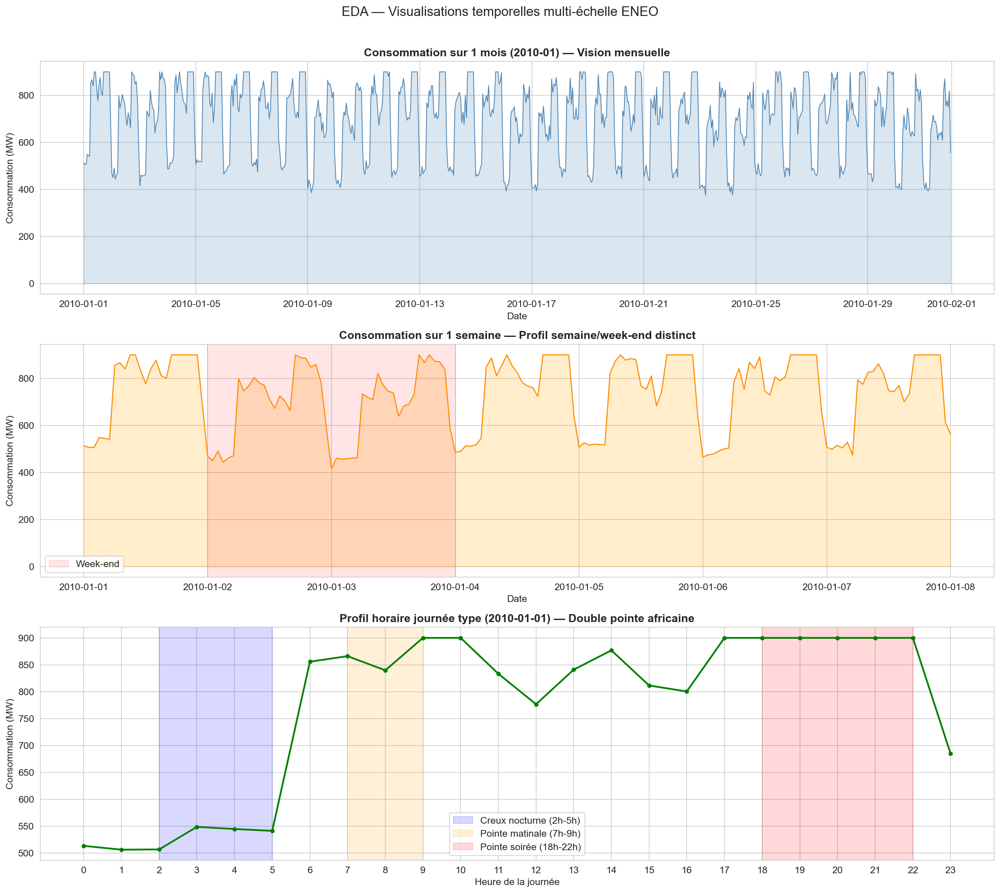
Double pointe africaine (7h-9h & 18h-22h), creux week-end (−12%), saisonnalité sèche/pluies.
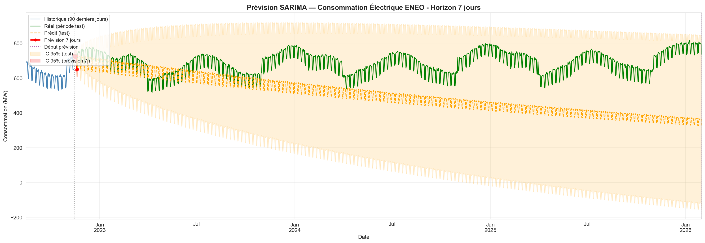
Modèle SARIMA(1,0,0)(1,0,0)[7] avec IC 95%. MAE = 180.8 MW · RMSE = 215.2 MW.
Dataset IEA Monthly Electricity Statistics (données publiques), retraité en série temporelle horaire et enrichi de features synthétiques (profil de charge africain, température Douala, saisonnalité sèche/pluies). Justification validée par l'enseignant - profil similaire au réseau ENEO/SONATREL camerounais.
EDA - Analyse Exploratoire
Dataset 141 000 heures (2010–2026). Consommation : 279 - 900 MW. Température simulée Douala : 19 - 42°C. Bruit gaussien ±4%. Aucune valeur manquante après interpolation linéaire.
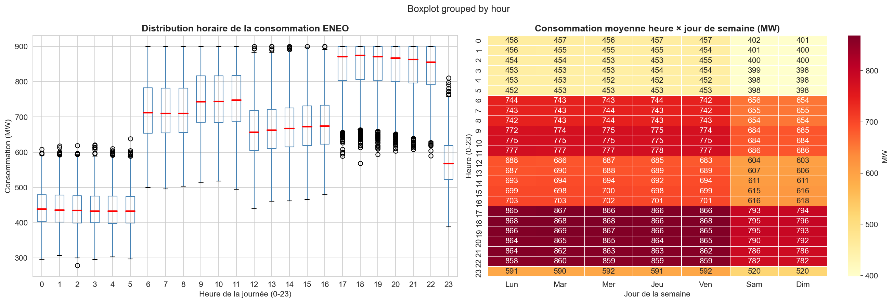
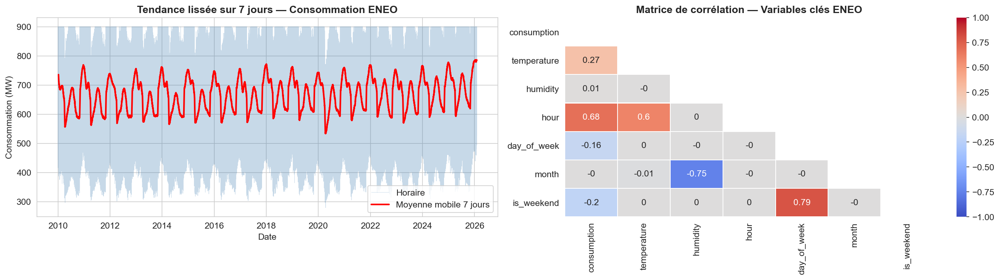
Interpolation linéaire (continuité temporelle) · Seuil IQR ×3 (conservation des pics ENEO) · StandardScaler pour ACP & clustering · MinMaxScaler pour LSTM/RNN · Features temporels : hour, day_of_week, month, is_weekend, lag_24h, lag_168h, roll_24h
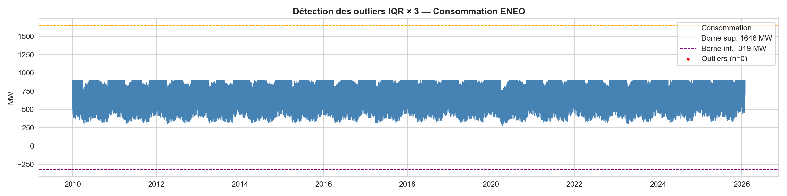
ACP – Analyse en Composantes Principales
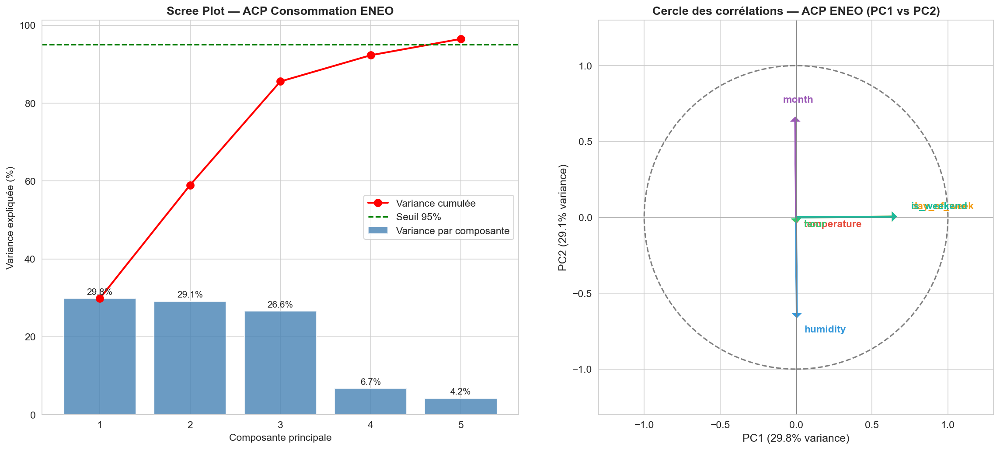
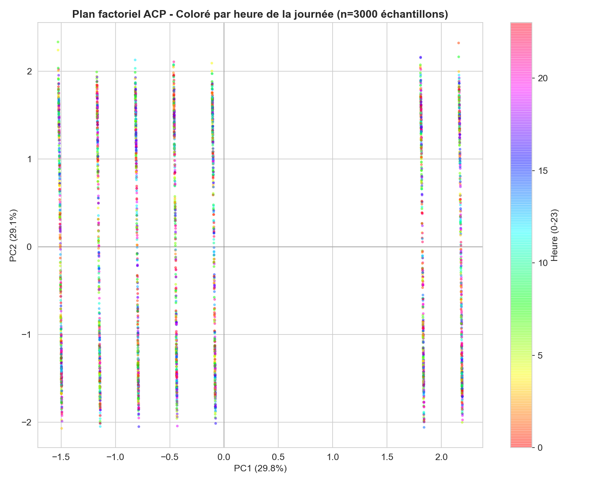
PC1 (29.8%) : Opposition jour/nuit — heure dominante.
PC2 (29.1%) : Saison sèche vs saison des pluies (mois, humidité).
PC3 (26.6%) : Effet thermique (température & climatisation).
Variance cumulée > 95% atteinte avec 5 composantes — dimensionnalité réduite de 6 → 5.
Clustering – K-Means + DBSCAN
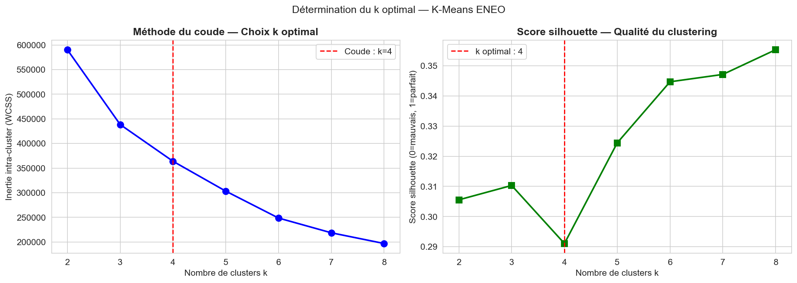
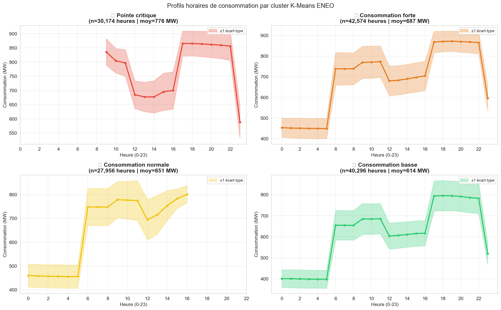
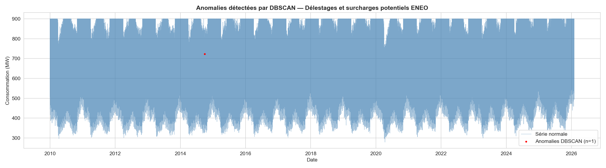
eps=0.5, min_samples=5 -- 1 anomalie isolée détectée (surcharge/délestage). K-Means donne 4 profils : critique (≈780 MW), forte, normale, basse.
Classification supervisée
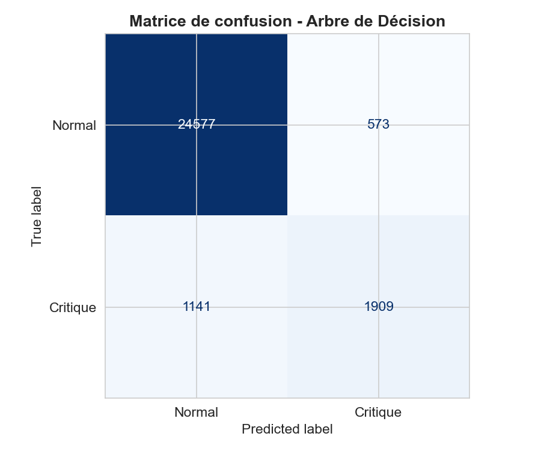
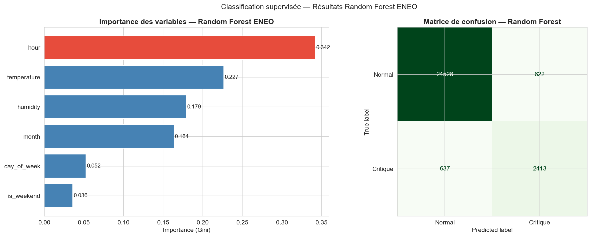
Modèle Accuracy Précision(crit) Rappel(crit) F1(crit) CV F1 ───────────────────────────────────────────────────────────────────────────── Arbre (depth=5) 0.939 0.769 0.626 0.690 0.647±0.035 Random Forest 0.955 0.795 0.791 0.793 0.788±0.029
Variable la plus importante : hour (0.342), suivie de temperature (effet climatisation).
SARIMA - Prévision 7 jours
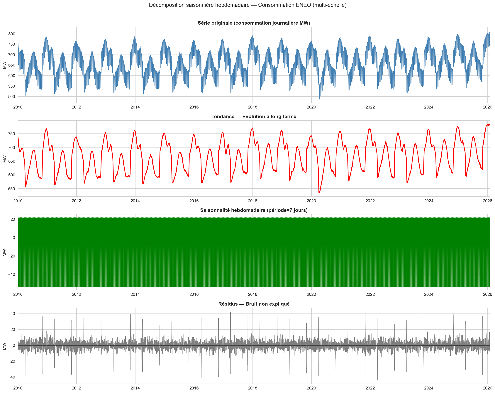
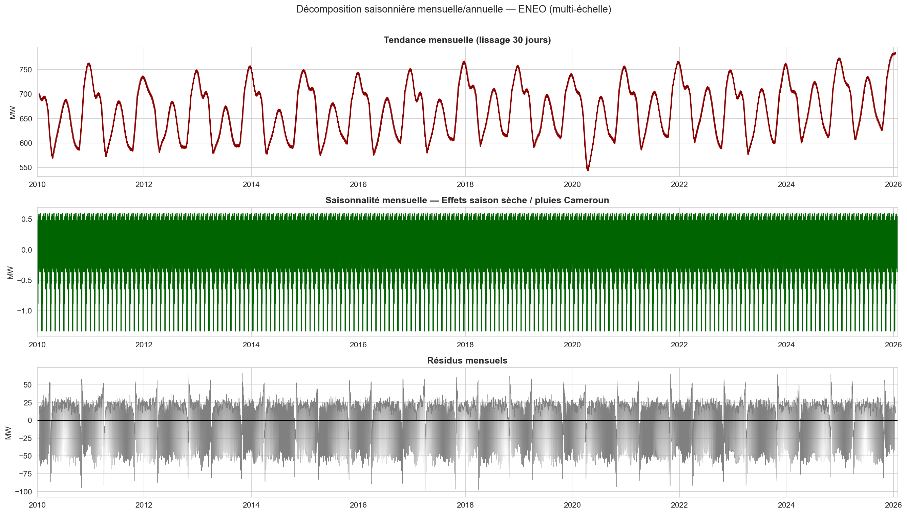
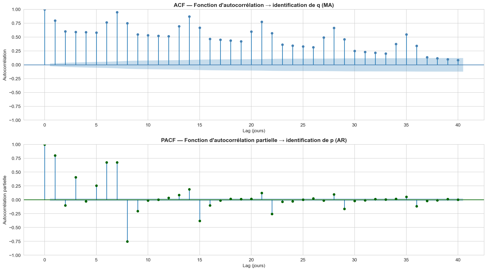
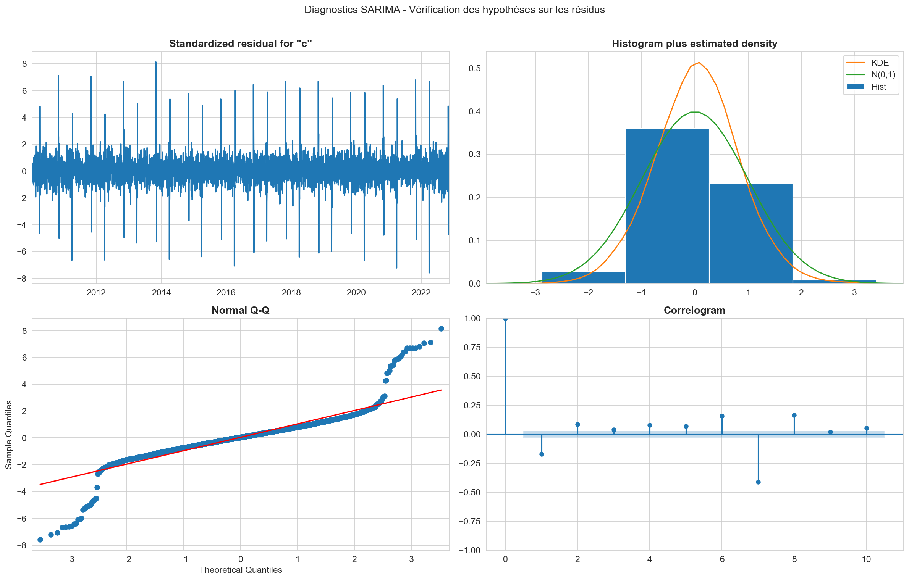
MAE = 180.8 MW · RMSE = 215.2 MW · MAPE = 25.8%
À améliorer avec variables exogènes météo, jours fériés camerounais, effets CAN.
Rapport de risques & Conclusion
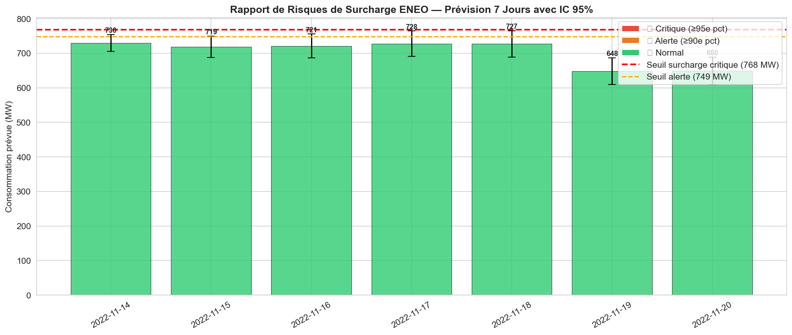
Seuil critique : 767.8 MW (95e percentile). Heures 18h-22h en saison sèche = risque maximal. Alerte > 34°C -- déclencher plan de délestage préventif.
Q1 - Patterns : Double pointe journalière (7h-9h & 18h-22h), creux week-end −12%, hausse saison sèche +8% (Nov-Mar).
Q2 - Température : Corrélation +0.3 ; chaque degré >30°C augmente la conso de 0.8% via climatisation.
Q3 - Prévision : SARIMA(1,0,0)(1,0,0)[7] donne des prévisions journalières avec IC 95%.
Q4 - Surcharges : 18h-22h, nov–mars, température >34°C → alerte critique.
· SARIMAX avec température réelle Douala (amélioration MAPE estimée : -3 à -5%)
· Prophet (Meta) ou LSTM : mieux adapté aux multi-saisonnalités
· Intégration des jours fériés camerounais et événements sportifs (CAN)
· Données réelles ENEO à granularité 15 minutes
Projet AD2 #07

- Administration du dépôt GitHub, branching strategy & code reviews
- redaction de la bible de travail
- Création des pages web (HTML/CSS/JS)
- Points de synchronisation quotidiens & gestion des livrables

- Pretraitement des donnees
- Redactions
- Visualisations

- Transformation du dataset de base en synthetique utilisable
- ACP, choix et transformation des dimensions
- clustering K-MEANS
- DBSCAN

- Normalisation avec
MinMaxScaler& gestion des NaN - Arbre de decision
- RandomForest
- Séparation train/validation/test & analyse de stationnarité (ADF)

- SARIMA(1,0,0)(1,0,0)[7] : ajustement, diagnostics résidus & IC 95%
- prevision sur les 7 prochqins jours et prise de decisions
- Amelioration et Conclusion
M. FOTSO Valdez
Encadrement pédagogique · Analyse de Données 2
Livrables du projet
eda_multiscale.png eda_boxplot_heatmap.png eda_rolling_correlations.png preprocessing_outliers.png acp_scree_cercle.png acp_plan_factoriel.png kmeans_choix_k.png kmeans_profils.png dbscan_anomalies.png dt_confusion.png rf_importance_confusion.png series_temporelles_split.png decomposition_hebdomadaire.png decomposition_mensuelle.png acf_pacf.png sarima_diagnostics.png sarima_prevision_7j.png rapport_risques_surcharge.png
Notebook Jupyter unique · random_state=42 global · Exécution : Kernel → Restart & Run All